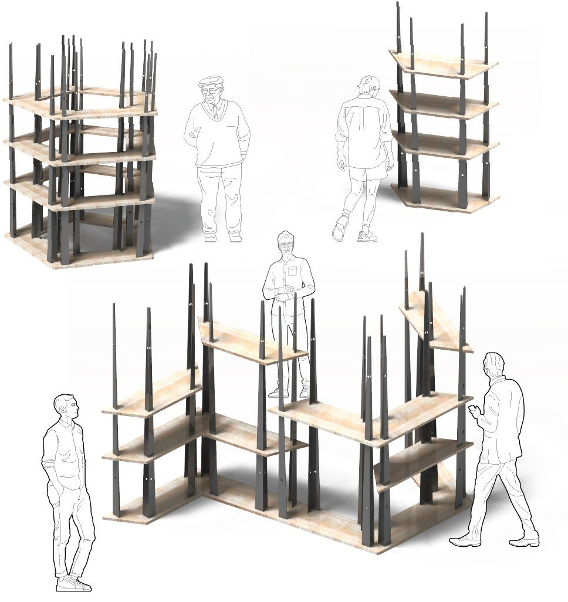
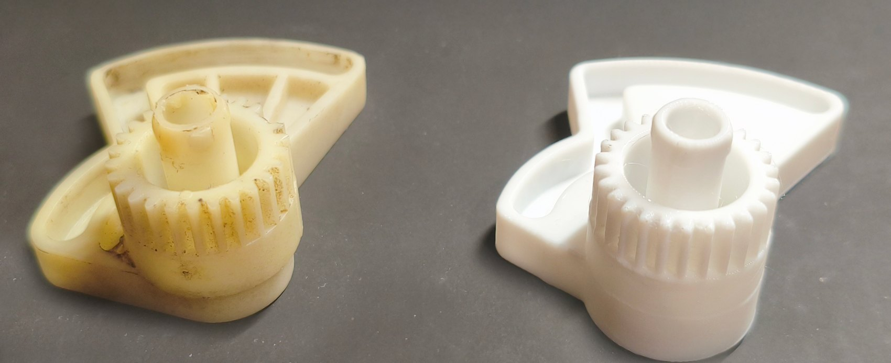

- Proyecto
- MIES
- Contexto
- Proyecto de cátedra · ETSAVA
- Año
- 2026
- Material
- Al 5052 H32 · contrachapado de chopo
- Hoja
- 05 / 06
Menos es más, en Castilla
MIES. 1. f. Cereal maduro listo para ser segado, base del paisaje castellano. 2. m. (Arq.) Arquitectura basada en la claridad material y estructural.
Mobiliario modular basado en una inversión conceptual: la fragilidad de las espigas de cereal se convierte en vigas de aluminio. Su geometría trapezoidal permite agrupaciones espaciales basadas en el pentágono.
Vigas de aluminio y baldas de chopo
Las baldas, de contrachapado de chopo, tienen una posición fija determinada por cortes precisos que, al encajar en las vigas, definen la estructura. Las perforaciones de los perfiles permiten anclar cuerdas tensadas y sostener paneles A1.
El chopo crea un vínculo con los recursos forestales de Castilla y León; el aluminio aporta la precisión industrial.
Del círculo al zig-zag
En círculo, los módulos crean zonas de reunión abiertas; alternados en zig-zag, la estructura se estira para acompañar zonas de paso. Las configuraciones abiertas funcionan como pequeños refugios que dividen el espacio de forma suave.
De abajo hacia arriba
- Se asienta la base para dar estabilidad al conjunto.
- Se encajan las vigas verticales que forman el esqueleto estructural.
- Con el bastidor levantado, se colocan las baldas de abajo hacia arriba.
Bolsa de rafia reciclada
Rafia agrícola reciclada de alta resistencia. Las asas permiten cargar la pieza entre dos personas: la instalación es un esfuerzo compartido desde el primer momento.
